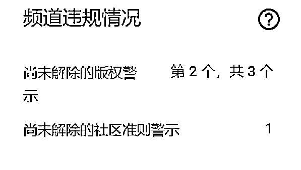
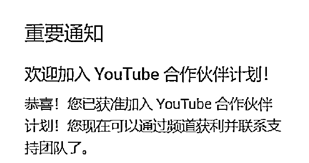
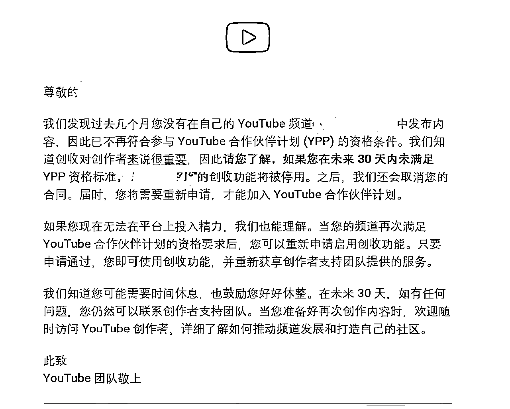

来源：https://rlwxa0zgke.feishu.cn/docx/O8tYd5XYtoWc5rxyDy0cPIxbnrS
1、YPP 很难达成
2、做短片容易达成YPP
3、不露脸就过不了YPP
4、可以先搬运，然后原创再通过YPP
5、YPP一旦通过，就安全了
6、过了YPP，开始赚钱了就容易了
7、过了YPP，会越做越赚钱
8、频道越大，YPP越赚钱
9、可以靠YPP收入，很容易就成为全职博主
10、过不了YPP，就无法在油管上赚钱
11、做一个把英文影片翻译成中文影片的频道能通过YPP
12、频道有社区和版权警示，不能被批准加入YPP赚钱
13、使用AI技术合成语音，会被拒绝YPP
14、只要我过了YPP，同时不违规，有播放就有广告费收入
很多人觉得YPP很难达成。一看要求，要1000个粉丝、4000个小时的观看时长；要是做短片，90天内得有1000万的播放量，这太难了，于是很多人还没开始就放弃了，尤其是新手，没做过内容，觉得这简直难如登天。
实际上，相当多认真尝试的人，在一段时间内是能够通过油管设定的这个标准的。这个标准背后有平台的大数据支撑，把及格线划在这儿是有道理的，通过YPP的人并非凤毛麟角。在官方的一个数据，大多数人持续做在半年到一年内达成YPP的人数较多。
推出Shorts后，用AI生成Shorts这个时间还有可能再次缩短，这源于是否在Shorts出爆款，能够获取很高的播放量，如能，那么就很快就过YPP了。
有些人认为做短片和长篇内容都能加入YPP，且短片容易制作，做短片就更容易达成YPP。同样的Shorts的标准也是基于大数据来的，我知道有些人做的
Shorts就凭自己感觉做，播放量也上不来啊。目前手上的资料做 Shorts 能快速达到YPP的还是跟爆款以及一些技巧。
Shorts 要么就短，要么就很吸引人，在人没有反应过来，或者说觉得后面还有的时候，停了，又或者是时间短信息量又大，不得不多看几遍才能
把Shorts传达的信息消化，这造成了有不错的完播率，点赞与评论，这背后还是依托于一些做视频的技巧，如何拿捏人性是值得一生学习的事
我也知道，有些频道做长视频蹭了某些当下的热点，就靠几个视频就瞬间开通YPP的情况
实际上我们能看到许多优质频道，不仅不露脸，甚至不录手，还使用变音器，让人难以知晓其真实声音。有的频道仅用一张充满机械感的图片或粗糙的手绘漫画，主播从头讲到尾，观众甚至难以判断声音是真人还是机器合成。但由于这些内容观看完成度和播放量高，油管认定其为优质内容，同样会让频道通过审查。
有人认为可以先搬运内容，积累一定粉丝后再发布原创内容以通过YPP，这是对油管YPP审查制度的误解。
YouTube在审查你的频道时，会查看达标标准的数据，比如粉丝数、观看时长，或者短片的播放数，还会关注主要是哪些视频做出的贡献。
如果这些数据主要来源于搬运的视频，即便你之后辛辛苦苦制作了几个原创视频，由于你主要的播放时长不是原创的内容产生的，依然无法获批通过审查通过YPP
虽然你频道是通过了YPP,但是如果你的频道存在任何违规行为或被观众举报，审查人员会重新审查你的频道。一旦发现违规现象，随时会取消你的YPP资格。
过了YPP跟你赚钱是否容易没有直接相关性，就像你高考考得好，上了一个好的大学，不代表你读了一个好大学就一定会升职加薪、当上总经理、出任CEO、迎娶白富美、走上人生巅峰。你需要持续创作优质内容，开通YPP只是一个新的开始。
从大的视野来看，确实是越做越赚钱，但是在小的时间段内则不是这样，比如说一些频道主要的收入来源是蹭热点，通过热点蹭到一波流量，很多观看量，收益也不错，但是接下来一段时间视频看的人少了，收入也自然少了。有很多不可控因素会影响YPP的收益
收入有波峰和波谷，收入是波动的，不要有像在上班每个月领工资，一年更比一年多的想法，一般来讲我们以视频的播放量与播放时长来对一个频道进行一个
收入的预估，当然还包括观众的地区等等因素。
每个月的收入是以这个月的视频播放情况来的，如果你的主要收入是以YPP的话。
在油管平台上，不同频道的粉丝数量差异很大，有的频道有100万粉丝，有的只有10万粉丝。很多人会想当然地认为，100万粉丝的频道赚钱能力肯定是10万粉丝频道的10倍，可事实并非如此。
甚至一个只有1万粉丝的频道，有可能比拥有10万、100万粉丝的频道赚得更多。这是怎么回事呢？原来，影响YPP收入的因素众多，绝不是单凭粉丝数量就能决定的，这也是很多人常见的错误认知。
我举一个例子 在这个网址 https://www.tubebuddy.com/blog/profitable-youtube-niches/ 15 个最赚钱的 YouTube赛道
一些赛道就是比另外一些赛道赚得多，比如说一个卖房的博主，在房子上涨的上升期，人数不多，但是赚的并不少，或者一些关于
教人赚钱的课程，客单价高，赚的钱也不会少，等等，不能单一的以粉丝多就赚得多
有人觉得，依靠YPP的收入很容易成为全职博主，但是实际上这是有难度的。在油管平台，在官方允许的赚钱方式，比如粉丝打赏、直播间的超级留言和超级贴纸、开通会员订阅，还有添加商品链接、售卖T恤和马克杯等周边产品，看起来花样繁多。
但绝大部分人主要还是靠广告分成赚钱，平台拿45%，创作者拿55%。想要稳定地成为全职博主，会相当辛苦，困难重重。
在这里，我要郑重提醒大家，放弃仅靠YPP收入赚钱的幻想，尽可能多元化的收入
很多人认为，过不了YPP就无法在油管上赚钱，这其实是个常见的错误认知。只要你的视频有流量，有人观看、有人关心你，有人欣赏你，你就能将观众的注意力和你所提供的价值变现，不必受YPP的局限。
在油管平台上，除了官方提供的赚钱方式，你还有很多其他变现途径。比如，你可以在视频中呼吁观众捐款、打赏，购买你的商品，还可以在说明区域添加链接，邀请观众加你的微信、进你的群。
单独依赖YPP收入非常困难。结合我前面讲的内容，现在我要告诉你在油管上合理、健康的赚钱方式，那就是要善于利用观众的注意力和观看流量。
仔细思考你能为观众提供什么样的价值、服务和商品，通过这些途径获得的收入，应该超过通过YPP获得的收入。这样的收入构成才是健康、稳定的。
另外，根据前面提到的内容，油管平台可以随时取消你的YPP资格，所以它从根本上就不是一项安全有保障的业务收入。但如果你有平台之外的收入模式，就根本不需要依赖YPP了。
这就是我要讲的第十条重点。实际上，在油管做全职的人，他们的业务模式也是如此。油管以外的收入至少要占总收入的一半以上，而YPP收入在整个收入构成中是非主要部分，占比少于一半，并且这部分收入是波动的。
我们可以通过各种努力让它不断增长，但做内容的主要目的并非单纯提高YPP收入，而是增加粉丝量和潜在客户量。
如果粉丝量和潜在客户量增加，YPP收入随之提高，那自然是好事。即便YPP收入下降10% - 20%，但只要让YPP之外的收入提高50% - 100%，往往比将YPP收入提高100%要容易得多。而且，这部分收入你可以全程掌控，还能让它加速增长。
所以，真正健康的业务或赚钱模式，应该不断开拓平台之外的收入渠道。把内容像免费广告一样发布在油管平台和自己的频道上，同时还能获得广告费用，做广告为自己的业务引流，油管还给广告费。
这里说明下，这里的英文影片属于知识共享（creative commons）类的视频
把英文影片翻译成中文，用AI配了中文语音，并全部加了内嵌字幕，达到获得门槛申请获利，YouTube官方会拒绝通过YPP
理由：重复性内容，视频 看起來是大量生成的内容或自动生成的内容，对于观看者而言，没有太多教育或其他价值。
仅仅只是把英文翻译成中文，YouTube官方会认为 未構成對原作品的大幅更改 未构成对原作品的大幅更改，虽做了细微更改，但基本是照搬别人的内容，仍然违反YouTube官方 有关重复使用内容的政策
这种情况就走非YPP的收益渠道，只要你有流量，完全可以通过流量来进行一个获利。
有另外的情况，不属于知识共享（creative commons）类的视频，指有版权的，授权谁谁谁来进行一个二次处理，这样是有可能通过YPP的，这两者性质是不同的。
比如说音乐授权，你通过音乐方的授权能在你的频道使用授权的音乐，获得的分成由授权人和你共同进行分享。
知识共享谁都可以用，YouTube不鼓励这样做，知识共享类既然是免费的，那么平台就不愿意再额外的对你进行一个奖励，如果允许这样做，那么会冒出相当多的频道来做这一类的内容。
另外在YouTube视频可以进行一个自动翻译，虽然准确性不像人工那么精准，其实大部分情况下已经够用了。
当然了，如果真人出镜对视频进行点评，输出你个性化的观点，这肯定是能过YPP的
如下图，这个频道在死亡的边缘

其实还是可以通过YouTube合作伙伴计划，要想持续的获得广告费，那么在经过就要确保不要再违规了。

要想更好的规避其风险，要花时间学习这两个
YouTube 政策
YouTube 的《社区准则》
问题不在于你是否使用AI技术合成语音，而在于，你是否是生成的是大量低质的垃圾内容。
我们要善用他提高我们的生产效率，帮助我们创作出更加优良的内容，而不是让这个平台的算法，或者是YouTube官方的审查人对你的内容产生高度的怀疑
当你长时不更新视频，YouTube先是会给你通知，进行催更提醒，但是你在30天之内不保持住YPP达标水平，就停止频道获利资格
